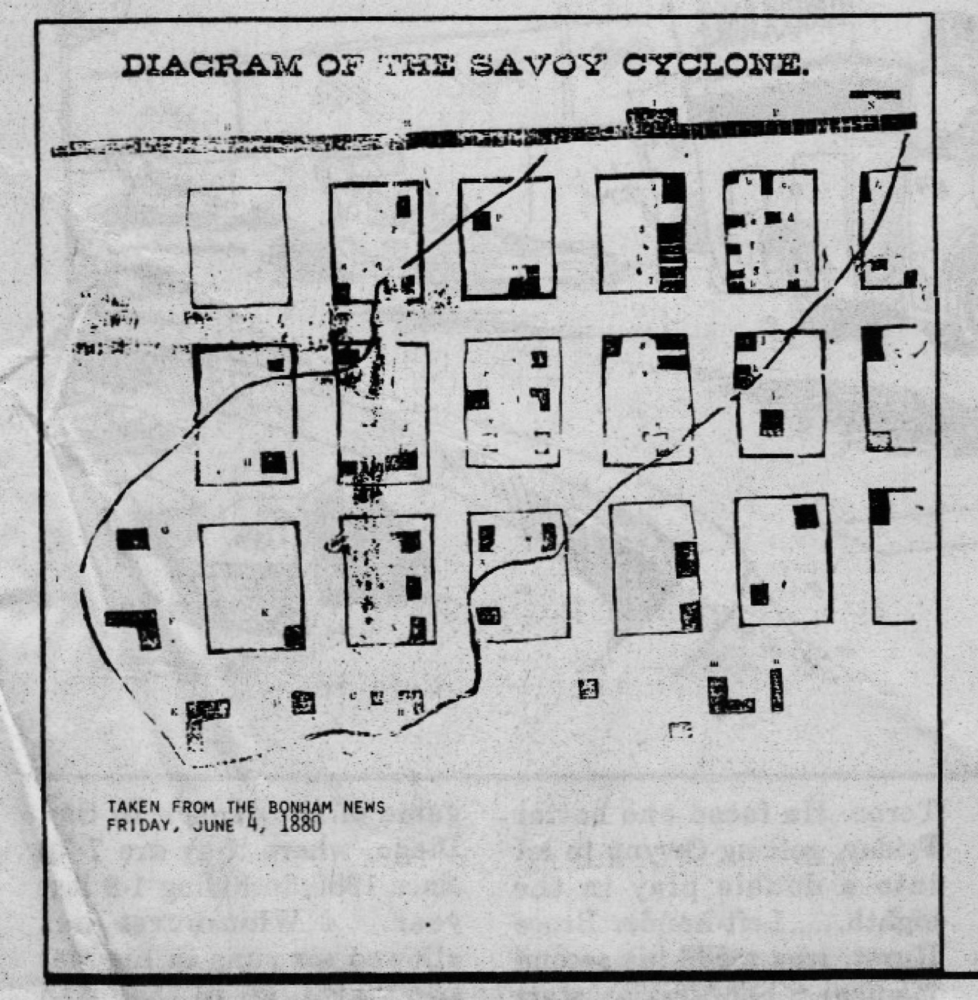

★
More Ways to Explore

Historic Maps
Explore city maps and see how Savoy's layout has changed over time — including the 1880 cyclone path.
View Maps →Newspaper Archive
Read historic newspapers and learn how Savoy's story has been told over the decades, from 1880 to 2007.
Browse Articles →
Landmarks & Places
Explore the buildings, homes, and institutions that shaped Savoy — from the college to the downtown.
Explore Places →People of Savoy
Discover the families and individuals who shaped Savoy — the Savoys, Halsells, Arterberrys, and more.
Learn More →
Documents & Records
Primary sources: census records, church registers, marriage certificates, and the 1885 town charter.
View Records →